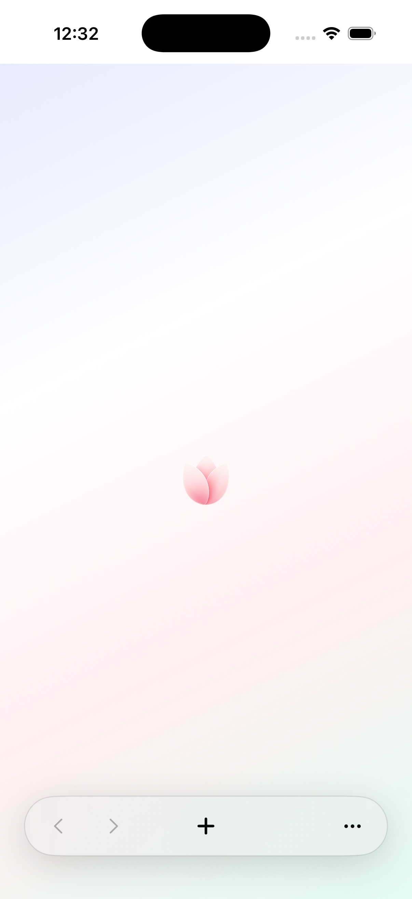
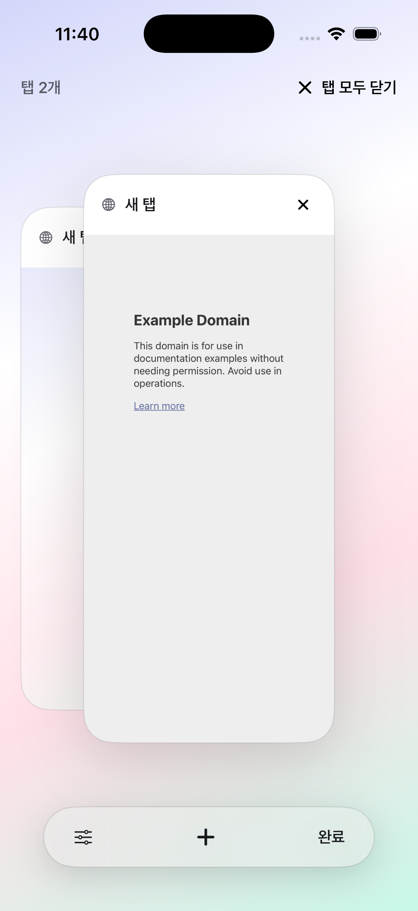
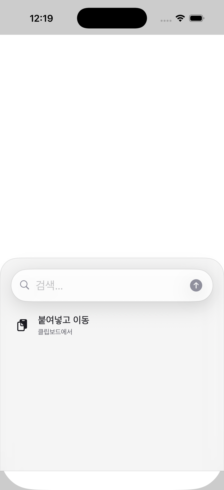
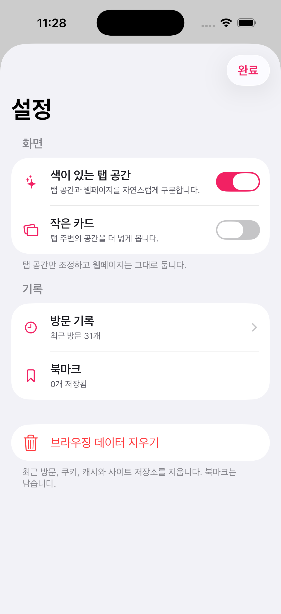

iPhone을 위한 공간형 웹 브라우저
Eivil
웹을 카드처럼 넘기세요.
열린 탭은 한 장씩 손에 잡히고, 플로팅 독은 웹페이지에 맞춰 자리를 비웁니다.
카드형 탭
플로팅 독
기기 내 저장


탭을 보는 새로운 거리
목록 대신, 공간.
모든 탭을 같은 크기의 카드로 펼치고, 손가락으로 스르륵 넘겨 원하는 페이지를 앞으로 가져오세요.
페이지를 가리지 않게
독은 떠 있고,
웹은 그대로.
손가락 가까이에 머물다가 키보드나 웹사이트의 하단 메뉴가 나타나면 자연스럽게 자리를 비웁니다.

주소와 검색을 한곳에서
찾고, 붙여넣고,
바로 이동.
주소 입력과 웹 검색, 열린 탭, 북마크와 방문 기록을 하나의 검색 경험으로 연결합니다.
필요한 브라우저 기본기
기억할 것은 남기고,
지울 것은 한 번에.
북마크, 방문 기록, 세션 복원과 브라우징 데이터 삭제를 지원합니다. Eivil 계정은 필요하지 않습니다.

한 장씩 더 가볍게
웹을 움직이는 감각부터
다시 만들었습니다.
탐색 데이터는 기기에 저장되며, 개발자 분석 도구나 광고 SDK를 사용하지 않습니다.